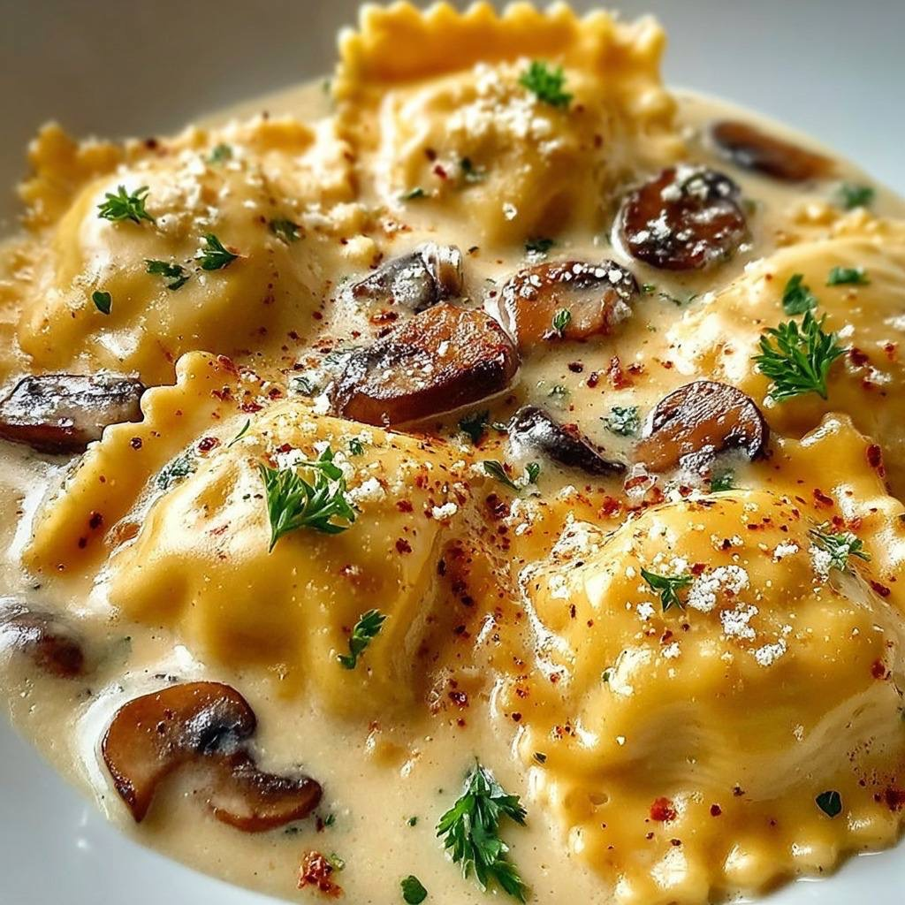

Frutos do mar · Massas com frutos do mar
Ravioli à camaresca

Ingredientes
- 200 g de ravioli recheado com ricota
- 1 colher (sopa) de manteiga
- 150 g de parmesão ralado
- 150 g de requeijão cremoso
- 400 ml de creme de leite fresco
- 150 g de champignon
- 4 camarões grandes
- Sal
Modo de preparo
- Cozinhe o ravioli em água e sal; reserve.
- Derreta a manteiga com champignon e creme de leite; ferva. Ajuste o ponto com o parmesão.
- Junte o ravioli, passe a um refratário, cubra com os camarões e o requeijão e gratinize.